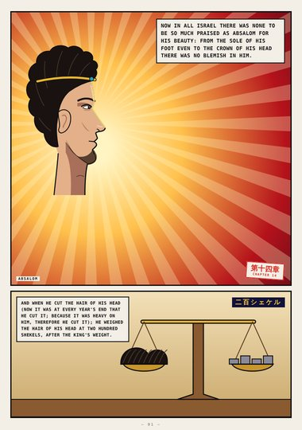
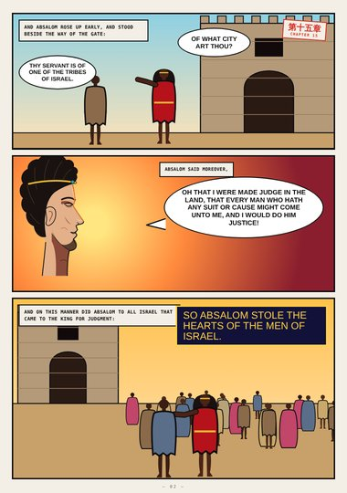
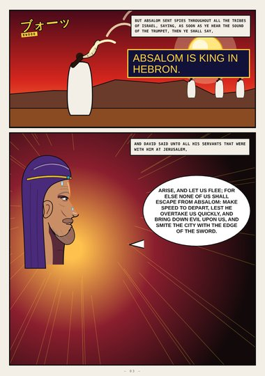
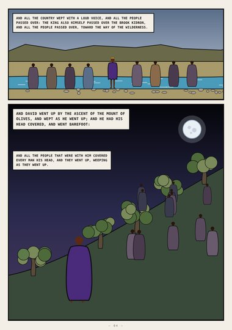
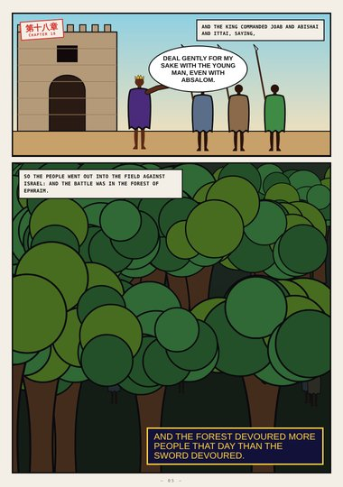
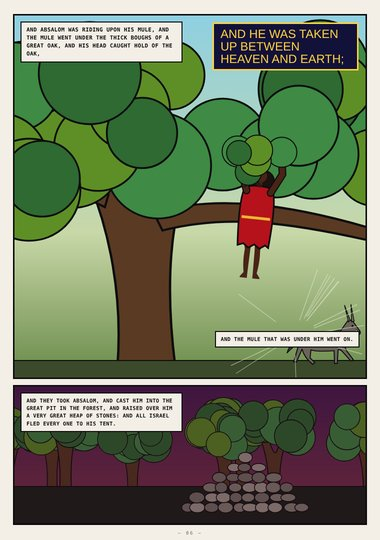
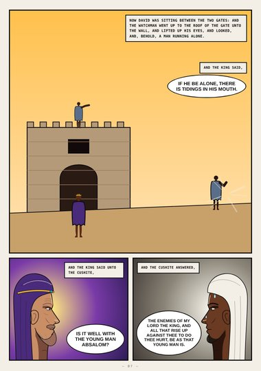
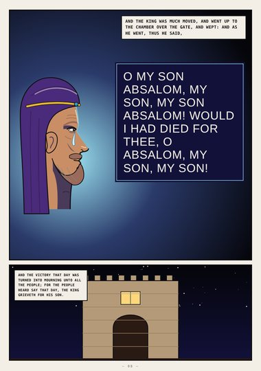
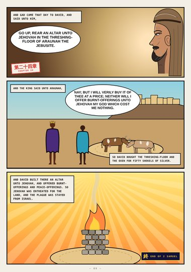

2 Samuel (digest) · Book Two · 2 Samuel 14–24
O My Son Absalom
Absalom's beauty and his hair, the hearts he stole at the gate, David's flight weeping up the mount of Olives, the forest of Ephraim and the great oak, the runner with tidings, the king's cry in the chamber over the gate, and the altar on Araunah's threshing-floor.
Digest edition: an early, abridged first draft (highlights only). The full edition is replacing it.
Start reading ›Pages
 CoverCover2 Samuel 14–24
CoverCover2 Samuel 14–24
Page 1No Blemish in Him2 Samuel 14:25–26
Page 2He Stole the Hearts2 Samuel 15:2–6
Page 3Absalom Is King in Hebron2 Samuel 15:10–14
Page 4The Mount of Olives2 Samuel 15:23–30
Page 5Deal Gently2 Samuel 18:5–8
Page 6Between Heaven and Earth2 Samuel 18:9–17
Page 7Tidings2 Samuel 18:24–32
Page 8O My Son2 Samuel 18:33 – 19:2
Page 9Which Cost Me Nothing2 Samuel 24:18–25